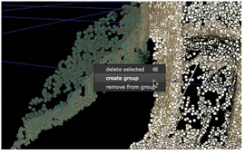
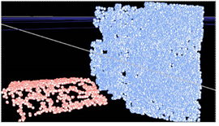

点云可能很难解释，尤其是如果 点 分离 控件设置为相对较高的值。对云中的点进行分组有助于可视化场景，尤其是在观众中明智地标记和着色时。
组也可以作为单独的点云进行烘焙或转换为网格。请参阅 从点云创建网格 欲了解更多信息。
要从点云创建组:
| 1。 | 通过以下方式在 3D 查看器中手动选择分组点: |
• 将选框拖动到查看器中所需的点上，或
• 持有 转变 ,并将选框拖动到查看器中的几个选择区域上，以同时选择所有点。
注意: 您可以通过按住将点从选择中移除 转变 Alt 并重新选择突出显示的点。
| 2. | 在突出显示的点上单击鼠标右键，然后选择 创建组 . |

新组将添加到 组 标签。
注意: 如果组已存在，将启用将选定点添加到组的选项。
| 3. | 根据需要添加更多组，以建立场景的可视化。 |
| 4. | 在 “属性” 面板中，选择 组 选项卡显示现有组的列表。使用 组 用于确定组外观的控件: |
• 在覆盖中显示组 -启用后，组将使用关联的 RGB 颜色在查看器中突出显示。
• 创建组 -单击将查看器中的选定点添加到新组。
• 删除选定组 -单击以删除列表中所有选定的组。
| 5. | 双击表列以编辑组名称或颜色，并切换可见性。 |
| 6. | 启用 仅输出可见组 在查看器中仅显示选定的组。 |

| 7. | 在建立所需要的群体，你可拆送到各个点云, 烘焙选定组 ,或创建组网格。 |
| 8。 | 继续到 从点云创建网格 |
|
|